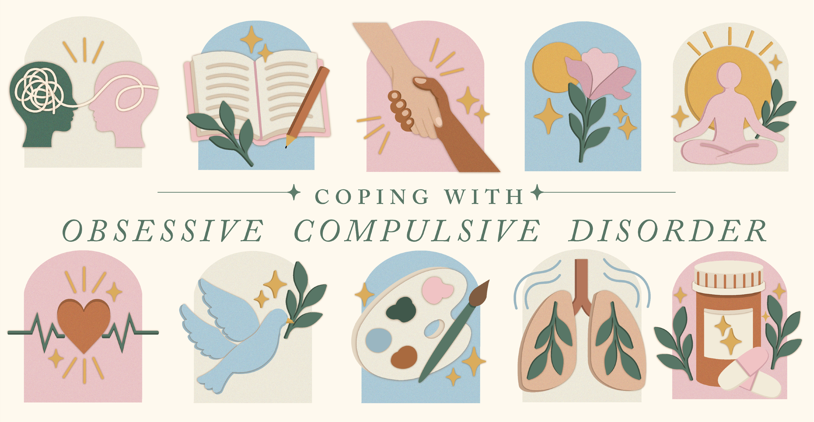
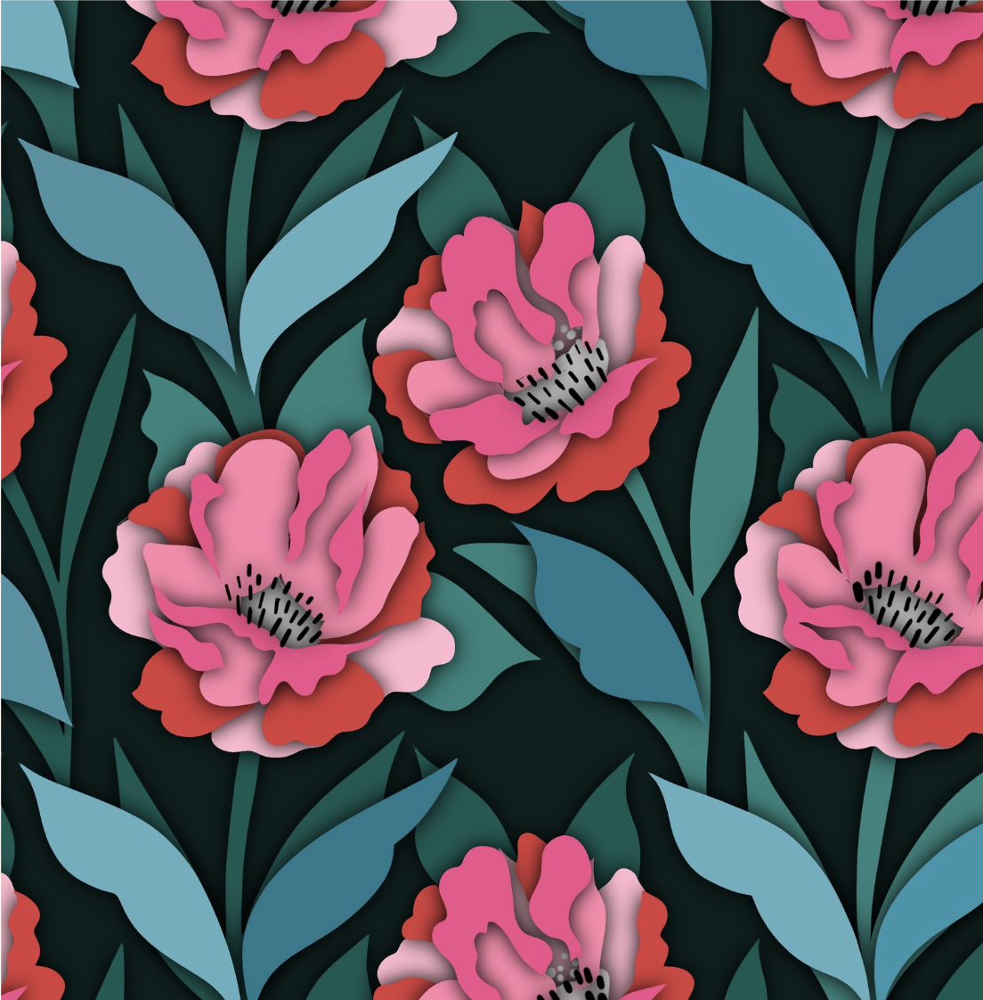

Cara Spratlin

This was a project for Design & entrepanurship professed by Nadia Issa. I was paired with a local company that was requesting help with a rebrand for their company. I was paired with Cafe Con Chisme, a latin, female owned cafe. I provided them with new business cards, branding elements, apron designs, cup designs, and versatile hand lettering as a secondary logo option. I also provided them with social media graphics for their existing social medias.
Icon Design for Obsessive Compulsive Disorder Awareness

This was a project for Identity Systems professed by Kelly Wiegard. I was instructed to come up with a cohesive concept of icons to represent a cause that I feel passionate about. I chose coping mechanisms with Obsessive Compulsive Disorder and created 10 icons that represented different coping mechanisms. I used color, shape, and texture to make the icons cohesive and illustrated these vectors in illustrator.
Surface Design

This is a surface design illustration that I designed and illustrated in my digital design and photography course professed by Dr. Allison Crane at the Center for Advanced Professional Studies in my high school district. I created this illustration as a part of a passion project for a childrens book that I was creating.
© cara spratlin 2026